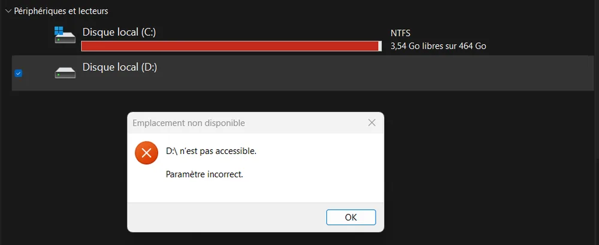
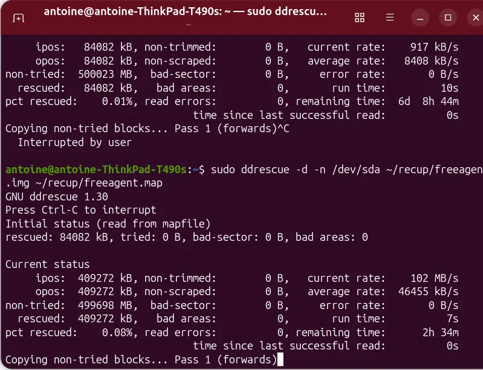
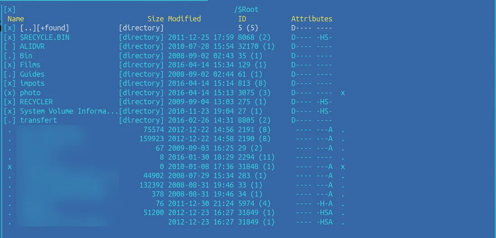
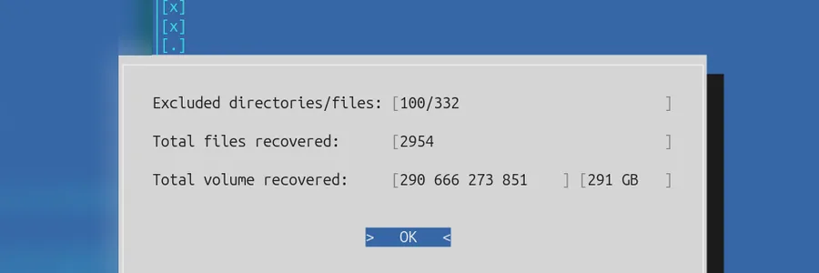

Récupération de données disque dur, SSD et clé USB en Finistère nord
Disque dur (HDD) qui ne s'ouvre plus, SSD non reconnu, clé USB illisible, photos effacées : je viens chez vous, je regarde ce qui peut être sauvé et je récupère vos fichiers.
Illustration inspirée d'un vrai cas, plus bas sur la page.
Le bon réflexe : arrêtez d'utiliser le support
Un fichier supprimé ou un disque formaté n'est pas effacé tout de suite : les données restent en place jusqu'à ce que quelque chose s'écrive par-dessus. Chaque copie, chaque installation, chaque redémarrage peut les faire disparaître pour de bon.
Ne copiez plus rien sur la clé, la carte ou le disque concerné.
N'installez pas de logiciel de récupération sur ce même disque.
Ne le reformatez pas, même si l'ordinateur vous le propose.
Si le disque fait un bruit inhabituel, débranchez-le tout de suite.
Appelez-moi ensuite au 06 41 53 73 34 : je propose souvent un créneau le jour même ou le lendemain.
Les pannes que je récupère, à domicile
Fichiers supprimés
Corbeille vidée, dossier effacé par erreur, photos supprimées d'un appareil photo ou d'un ordinateur.
Disque ou clé formatés
Une clé USB, une carte SD ou un disque reformaté par erreur : tant que rien n'a été réécrit, les fichiers sont souvent encore là.
Ordinateur qui ne démarre plus
Quand Windows refuse de démarrer, le disque est souvent intact. Je récupère vos fichiers en le lisant depuis un autre ordinateur.
Disque dur externe illisible
Le disque n'apparaît plus, Windows demande de le formater ou affiche une erreur : je regarde d'abord sans rien écrire dessus.
Cartes d'appareil photo
Carte mémoire illisible ou formatée par l'appareil, avec les photos des vacances ou d'un événement de famille.
Passage à un nouvel ordinateur
Transfert de vos photos, documents, mails et favoris de l'ancien ordinateur vers le nouveau, sans rien oublier.
Clé USB, SSD ou disque dur : chaque support se récupère différemment
Avant toute chose, il faut savoir sur quoi étaient vos fichiers. Un disque dur, un SSD et une clé USB ne stockent pas les données de la même façon, et les chances de récupération ne sont pas les mêmes.
Récupération de données sur disque dur (HDD)
Le disque dur classique, interne ou externe, enregistre les données sur des plateaux magnétiques lus par une tête. C'est le support qui se récupère le mieux après une suppression ou un formatage, tant que rien n'a été réécrit dessus.
Disque externe qui n'apparaît plus ou que Windows veut formater
Secteurs défectueux : copie complète avec ddrescue, comme dans le cas réel plus bas
Bruit de claquement ou disque qui ne tourne plus : laboratoire
Récupération de données sur SSD
Le SSD, dans la plupart des ordinateurs récents, stocke les données sur des puces de mémoire. Windows y active la fonction TRIM, qui efface réellement les fichiers supprimés au bout de peu de temps : un fichier effacé sur un SSD est souvent perdu pour de bon.
Ordinateur qui ne démarre plus : les fichiers du SSD sont souvent intacts
SSD non reconnu : diagnostic avant toute manipulation
Fichier supprimé : éteignez l'ordinateur au plus vite
Récupération de données sur clé USB et carte SD
Les clés USB et les cartes SD utilisent aussi de la mémoire flash, mais elles effacent rarement les fichiers supprimés aussi vite qu'un SSD. Après une suppression ou un formatage par erreur, la récupération réussit souvent.
Clé « à formater », vide ou affichée avec 0 octet
Carte SD d'appareil photo ou de téléphone illisible
Clé tordue ou connecteur cassé : selon les cas, laboratoire
Un vrai cas : un disque externe de 500 Go illisible
Un disque externe FreeAgent de 500 Go ne s'ouvrait plus. Plutôt que de forcer, j'ai d'abord copié le disque en entier, puis j'ai travaillé uniquement sur la copie. Voici les étapes, avec les vraies captures.

1. Le constat. Windows refuse d'ouvrir le disque : « D:\ n'est pas accessible. Paramètre incorrect. » Linux n'arrive pas non plus à lire son système de fichiers.

2. La copie du disque. L'outil ddrescue copie le disque secteur par secteur dans un fichier image. Il saute les zones abîmées, puis y revient doucement, sans jamais écrire sur le disque d'origine.

3. L'analyse de la copie. Le logiciel DMDE reconstruit l'arborescence à partir de la copie : les dossiers photo, Films ou impôts réapparaissent.

4. Le résultat. 2 954 fichiers récupérés, soit 291 Go. En comptant aussi les fichiers supprimés, l'analyse en a repéré 33 348.
C'est cette méthode que j'applique chez vous : on ne travaille jamais directement sur un disque abîmé.
Tarifs de la récupération de données
Diagnostic à domicile
30 €
Je viens chez vous, j'examine le support sans rien écrire dessus et je vous dis ce qui peut être récupéré.
Déplacement inclus
Avis franc sur les chances de récupération
Prix annoncé avant de continuer
Récupération et transfert
100 à 150 €
Je récupère vos fichiers, puis je les transfère sur votre ordinateur ou sur un nouveau support, rangés et vérifiés avec vous.
Récupération comprise
Transfert vers votre ordinateur, un disque ou une clé
Prix exact annoncé après le diagnostic
Tâches supplémentaires
35 €de l'heure
Toute tâche en plus de la récupération est facturée 35 € de l'heure, toujours à domicile.
Plusieurs supports à traiter
Mise en place d'une sauvegarde
Installation ou réglages en plus
Je vous annonce le prix avant de commencer. Si le support relève d'un laboratoire, je vous le dis dès le diagnostic.
Quand faut-il un laboratoire ?
Certaines pannes ne se réparent pas avec un logiciel : un disque qui claque ou grince, qui a chuté, pris l'eau ou qui ne tourne plus du tout. Ces disques doivent être ouverts en salle blanche, ce que je ne fais pas. Dans ce cas, je vous le dis franchement, je vous déconseille d'insister et je vous oriente vers un laboratoire spécialisé.
N'ouvrez jamais un disque dur vous-même : une seule poussière sur les plateaux peut rendre les données irrécupérables.
Comment ça se passe
AppelVous me décrivez le problème. Je vous dis tout de suite quoi éviter en attendant.
Diagnostic chez vousJ'examine le support sans rien écrire dessus et je vous annonce ce qui est récupérable.
RécupérationJe récupère vos fichiers et je les transfère sur votre ordinateur ou un nouveau support.
SauvegardeJe vous montre comment ne plus jamais dépendre d'un seul disque.
Pour ne plus rien perdre
La seule vraie protection, c'est une sauvegarde : une copie de vos fichiers ailleurs que sur l'ordinateur, faite automatiquement. Un disque externe, un service en ligne, ou les deux. Je vous explique les options dans le conseil sauvegarder ses photos et documents, et je peux la mettre en place chez vous.
Pour une entreprise, une panne de disque peut arrêter toute l'activité. Récemment, le disque dur du poste de travail d'une TPE de Ploudaniel était hors service : j'ai remplacé le disque, réinstallé et remis le poste en route pour que l'activité reprenne.
Récupération de données dans les communes du nord Finistère
Je me déplace depuis Plouguerneau dans 52 communes du nord Finistère, 7 jours sur 7 sur rendez-vous, au même tarif partout : déplacement inclus.
Récupération de données dans les Abers
Je suis basé à Plouguerneau : dans les Abers, je peux souvent passer le jour même ou le lendemain, ce qui compte quand un disque montre des signes de faiblesse.
Récupération de données à Lesneven et sur la Côte des Légendes
De Lesneven à Kerlouan, je viens avec mon matériel : lecture du disque sans rien écrire dessus, copie sur un nouveau support et vérification avec vous.
Récupération de données à Brest et dans la métropole
À Brest, Guipavas ou Plouzané, j'interviens chez les particuliers, chez les étudiants avant les partiels et dans les petites entreprises dont l'activité dépend d'un seul poste.
Le diagnostic à domicile coûte 30 €. La récupération avec le transfert des données sur votre ordinateur ou un nouveau support coûte de 100 à 150 € selon les cas. Toute tâche supplémentaire est facturée 35 € de l'heure. Je vous annonce le prix avant de commencer.
Que faire en attendant votre intervention ?
N'utilisez plus le support : ne copiez rien dessus, n'y installez pas de logiciel de récupération et ne le reformatez pas. Chaque écriture peut effacer définitivement les fichiers supprimés.
Mon ordinateur ne démarre plus, mes fichiers sont-ils perdus ?
Pas forcément. Quand Windows ne démarre plus, le disque est souvent intact : je récupère les fichiers en lisant le disque depuis un autre ordinateur.
J'ai formaté une clé USB ou une carte SD, peut-on retrouver les fichiers ?
Souvent, oui, si rien n'a été réécrit dessus depuis. Un formatage rapide n'efface pas les fichiers eux-mêmes, seulement leur table de rangement.
Peut-on récupérer les données d'un SSD ?
Oui, quand le SSD fonctionne encore et que les fichiers n'ont pas été supprimés : c'est le cas d'un ordinateur qui ne démarre plus, par exemple. En revanche, un fichier supprimé sur un SSD est souvent effacé pour de bon par la fonction TRIM de Windows.
Ma clé USB n'est plus reconnue ou demande à être formatée, que faire ?
Ne la formatez pas. Débranchez-la et ne l'utilisez plus. Si la clé est encore détectée par l'ordinateur, ses fichiers sont souvent récupérables. Si elle n'est plus détectée du tout ou si elle est cassée, je vous dis si un laboratoire est nécessaire.
Disque dur HDD ou SSD : lequel se récupère le mieux ?
Le disque dur classique (HDD) se récupère généralement mieux après une suppression ou un formatage, car il n'efface pas tout de suite les fichiers supprimés. Le SSD est plus fiable mécaniquement, mais un fichier supprimé y disparaît souvent rapidement.
Mon disque dur fait du bruit, que faire ?
Débranchez-le tout de suite. Un disque qui claque ou grince a souvent un problème mécanique, et chaque mise sous tension peut l'abîmer davantage. Dans ce cas, je vous oriente vers un laboratoire spécialisé.
Pouvez-vous tout récupérer ?
Personne ne peut le garantir. Le diagnostic sert justement à savoir ce qui est récupérable avant de lancer la récupération.
Mes fichiers restent-ils confidentiels ?
Oui. La récupération se fait chez vous, et vos fichiers sont copiés sur un disque ou une clé qui vous appartient. Je ne conserve pas vos données.
Intervenez-vous dans ma commune ?
J'interviens à domicile dans 52 communes du nord Finistère, des Abers à Brest, Lesneven, Landerneau et le Pays d'Iroise, 7 jours sur 7 sur rendez-vous.
Disque dur, SSD ou clé USB à récupérer ?
Arrêtez d'utiliser le support et appelez-moi. Diagnostic à domicile 30 €, récupération et transfert des données de 100 à 150 €, en Finistère nord.